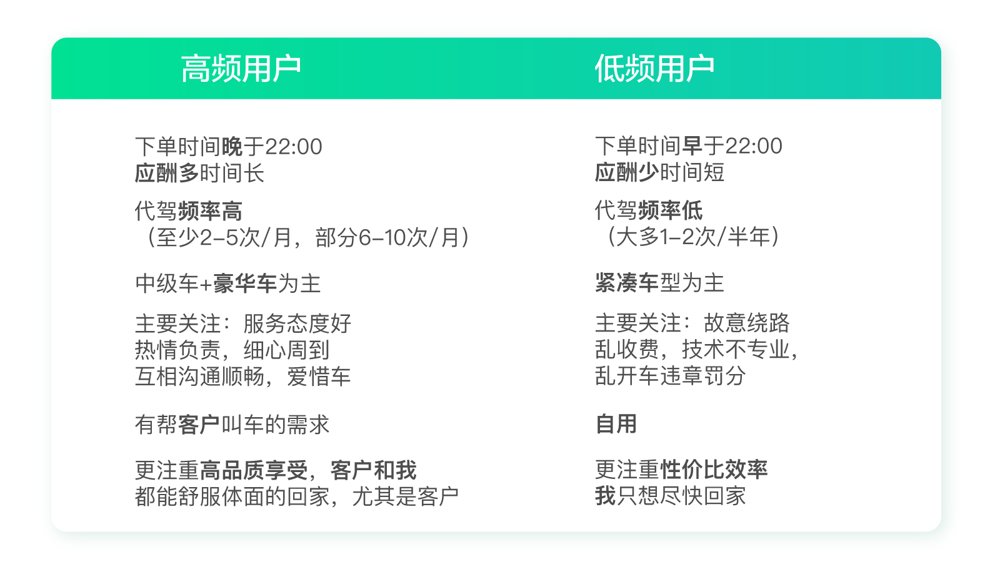
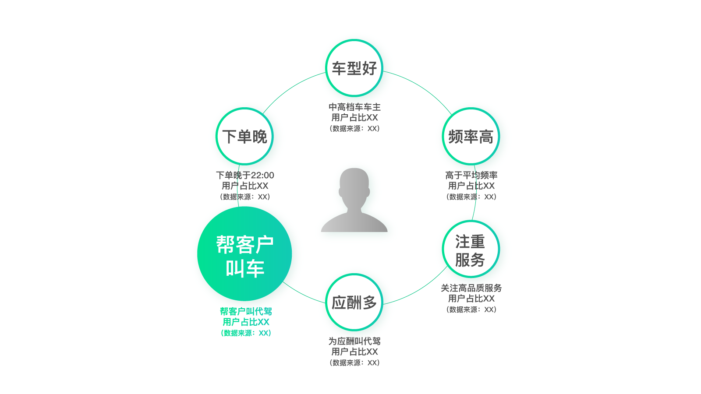
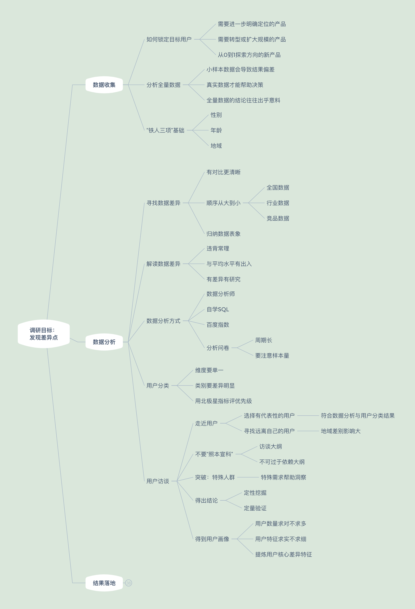
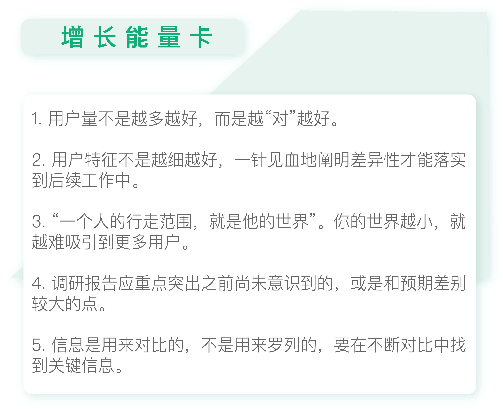

- 00 开篇词 人人都是增长官.md.html
- 01 预习 增长小白如何“弯道超车”？.md.html
- 02 预习 如何理解“增长”？.md.html
- 03 预习 不同职能如何做好增长？.md.html
- 04 预习 做增长如何处理职能间的矛盾？.md.html
- 05 正确目标找不对，天天加班也枉然.md.html
- 06 活学活用北极星指标.md.html
- 07 OKR如何助力增长？.md.html
- 08 不懂用户调研？那就对了！.md.html
- 09 调研目标：在差异性洞察中找到爆破点.md.html
- 10 数据分析：在“花式对比”中发现玄机.md.html
- 11 用户分类：围绕北极星指标细分人群.md.html
- 12 用户访谈：像侦探一样寻找破案线索（上）.md.html
- 13 用户访谈：像侦探一样寻找破案线索（下）.md.html
- 14 提炼用户差异，发现增长契机.md.html
- 15 挖掘产品优势，打破增长瓶颈.md.html
- 16 定位营销差异，抢占用户心智.md.html
- 17 一级方向：找到增长爆破点.md.html
- 18 B端产品如何调研？.md.html
- 19 全局规划增长机会.md.html
- 20 统筹全局的用户增长地图.md.html
- 21 案例解析：定义关键增长指标.md.html
- 22 正负双向洞察，找准切入点.md.html
- 23 二级机会：制定增长策略.md.html
- 24 为一家濒临破产的公司制定增长策略（上）.md.html
- 25 为一家濒临破产的公司制定增长策略（中）.md.html
- 26 为一家濒临破产的公司制定增长策略（下）.md.html
- 27 为什么指标数据怎么优化都不提升？.md.html
- 28 案例解析：打造增长闭环（上）.md.html
- 29 案例解析：打造增长闭环（下）.md.html
- 30 案例解析：唤醒沉睡用户（上）.md.html
- 31 案例解析：唤醒沉睡用户（下）.md.html
- 32 没有分解，就无缘增长.md.html
- 33 四个要点颠覆传统需求文档.md.html
- 34 三级落地：无限场景应用.md.html
- 35 手把手教你设计一次成功的实验（上）.md.html
- 36 手把手教你设计一次成功的实验（下）.md.html
- 37 积少可成多，别针换别墅.md.html
- 38 四级延续：增长组件库案例.md.html
- 39 以用户为中心增长.md.html
- 增长导航图 增长专栏的知识架构是怎样的？.md.html
- 尾声 结束意味着新的开始.md.html
- 预习答疑 你需要一张思维导图吗？.md.html
- 捐赠
14 提炼用户差异，发现增长契机
你好，我是刘津。
前面我们明确了调研的目标是发现用户差异点，随后进行了数据对比看整体差异、又对用户进行分类对比，进一步挖掘目标用户的差异，那么接下来如何落地呢？
在阐述具体落地方式之前，首先需要你理解两个重要的观念：用户数量不是越多越好，用户特征不是越细越好。
用户数量不是越多越好
传统互联网产品普遍把追求用户数量放在首位，认为用户越多越好。包括用户增长这件事，很多人也是认为增长的首要表现就是用户量在增加。
然而现在形势已经发生了转变，“大而全”的产品几乎完全被巨头垄断。现在以及未来，更多的机会在于垂直领域的“小而美”产品。在这种情况下，用户量不是越多越好，而是越“对”越好。
举个例子，如果宜人贷盲目追求用户量，吸引了错误的用户来借款，那么表面上用户量和业绩量蒸蒸日上，而实际上这里面可能有大量用户不还款，反而导致公司在赔钱。
获客成本打了水漂还是次要的，数万的本金可不是小数目。可以说对于借款产品来说，一个错误的用户将使企业付出巨大的成本。
如果想找对用户，就需要先进行分析，通过挖掘用户差异点了解“对”的用户具有什么特征，从而借此找到更多“对”的用户。虽然一开始你会觉得有点花功夫，但是后面你就可以体会到这么做事半功倍的效果。
盲目进行营销裂变可能让你快速品尝到甜头，但却发现后期增长乏力。这是因为增长的基本功没有打好。
用户特征不是越细越好
找到了正确的用户，就万事大吉了吗？当然不是，结论是一方面，能够真正落实到工作中才是最重要的，否则再正确的结论也只是一张废纸而已。
要想把正确的结论落实下去，就要学会精简、一针见血地陈述结论。而不是像传统调研分析报告那样包罗万象、缺乏重点。
具体如何做呢？我拿宜人贷的例子整体回顾一下。
在数据分析“铁人三项”对比的过程中，我们发现男性用户居多、二线城市用户居多且绝对占比和倾向度都更高。
接下来围绕北极星指标“低成本高贷款余额”，我们把用户粗略地分成“工薪族”和“小微企业主”两类。基于风险成本的考虑，我们把“工薪族”视为最重要的用户群体，想进一步挖掘这类人群的差异特征。
我们来到较有代表性、且距离较远的二线城市武汉，分别挑选了若干工薪族和小微企业主用户进行访谈，受访用户均为男性。
在访谈的过程中，我们意外地发现两类人群差异并不明显，原因是大部分用户都在兼职创业：除一份稳定的工作之外，一般还需要做些其它的事情来增加收入，比如投资个美发店、饭馆，做兼职的保险代理员等等。
这是因为当地男性外地人较多且结婚生子较早，所以家庭重担很大，而当地收入又不高只有几千元，所以兼职创业贴补家用也就不足为奇了。
这和一线城市的情况差别还是很大的，如果你一直生活在一线城市恐怕是很难感受到的。这次调研让我感到十分震撼，果然“一个人的行走范围，就是他的世界”。
对于做产品来说，你的行走范围越小，世界也就越小，又怎么可能吸引更多的用户呢？
所以做用户增长，光坐在办公室里研究数据是肯定不够的，你需要先改变自己的世界。
由于后台数据获取不到用户的职业信息，所以我们之后又投放了一轮问卷，验证了有“兼职创业”特征的用户确实占多数。他们并不是纯粹的工薪族或者小微企业主，这颠覆了我们之前的分类假设。
相应地，借款用途和我们之前预想的也不一样，我们本以为用户借款用于日常大额消费，而实际上当时的用户借款主要用于资金周转。
现在，如果让我归纳核心关键点，我会说：“二线城市用户”“兼职创业”“资金周转”这三个关键词。因为这几点是我们在调研之前尚未意识到的，或是和我们预期的差别较大，这些内容讲出去更容易吸引到受众的注意，从而改变产品决策。
提炼用户核心差异特征
现在我们回归到今天的主题，也就是如何落地调研结果。
我们可以把前面提炼出的关键特征归纳到一张纸上形成改良版的用户画像。需要特别注意的是，要把数据支撑及必要的相关性说明附在后面。这是因为如果没有必要的数据支撑，调研结果将不具备说服力。具体请参考下图。
比如说“二线城市多”这个观点，后面必须要有对应的说明来证明这个观点。
当然最好的方式就是对比。比如二线城市用户占比是多少，全国占比是多少，这样一比较就能看出来。在陈述“兼职创业多”这个观点时，我们列举了工薪族的占比，以及其中兼职创业投资者的比例，这也是一种对比方式。
如果你有两类或两类以上的用户，那么你可以先对比他们之间的用户特征，再进一步提炼核心差异。比如上一讲提到的代驾案例里的两类人群对比：

根据对北极星指标的贡献度，把高频用户群体作为第一优先级。基于对比，我们很容易发现高频用户群体的几大特征：除了表面上的“代驾频率高”“车型好”“下单晚”“应酬多”“注重服务”以外，最重要的是这个发现：有帮客户叫车的需求，更重视客户的感受。

我们需要在每一条发现后面补充说明。比如，针对“下单晚”，可以附上：下单时间晚于22:00的用户比例。针对“应酬多”，可以附上：因为应酬而叫代驾的用户比例。其它内容以此类推。
需要注意的是，不同的补充内容，数据来源可能是不同的。比如“下单晚”可能来源于后台数据分析；而“应酬多”可能来源于问卷分析。所以在正式汇报时，最好能再详细说明一下每一条信息的数据来源和样本量等信息，好让你的结论更有说服力。
我们可以看到，这和传统的调研报告非常不一样。
传统的第三方调研报告、用户调研报告动辄十几页甚至几十页，侧重于描述具体的信息。包括用户分类，可能会分成若干类别，并把每类人群的画像都展示出来，最后的结果就是让受众没有概念、没有感觉，或需要自行“人肉对比”。
而我们的提炼侧重于在差异对比中体现出关键信息。这些关键信息一定是大多数人之前不知道的，或是和预想中有很大出入的，所以才非常的有价值。就好像在破案的过程中，往往是一个不经意的细节，一个违背“常理”的发现，成为了破案的关键所在。
总之，增长强调少而精、一针见血，这体现在我们工作的方方面面中：比如北极星指标（只有一个或一组）、数据分析（基础三项）、用户分类（尽量单一维度）、用户画像（最关键的差异点）……你发现这个规律了吗？
用户调研知识地图
- 今天的用户调研知识地图又补充了新支点，欢迎你在地图中补充自己的见解。

思考题
请在前面用户分类的基础上，进一步提炼核心用户群体的差异特征，辅以数据补充及说明，以及你从中得到的体会。
欢迎把你的思考和疑问通过留言分享出来，与我和其他同学一起讨论。
如果你觉得有所收获，也欢迎把文章分享给你的朋友。
© 2019 - 2023 Liangliang Lee. Powered by gin and hexo-theme-book.